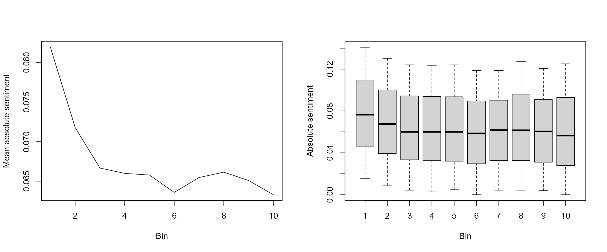

Tutorial contributed by Olivier Delmarcelle (PhD student, Ghent University).
The sentometrics package introduces simple functions to quickly compute the sentiment of texts within a corpus. This easy-to-use approach does not prevent more advanced analysis, and the sentometrics functions remain a solid choice for cutting-edge research. This tutorial will present how to go beyond the basic sentometrics settings in order to analyse the intratextual sentiment structure of texts.
Does the position of positive and negative words within a text matter? This question is investigated by Boudt & Thewissen (2019) during their research regarding sentiment implied by CEO letters. Based on a large dataset of letters, they analyze how sentiment-bearing words are positioned within the text. They find that CEOs tend to emphasize sentiment at the beginning and the end of their letter, in the hopes of leaving a positive impression to the reader.
Their results confirm generally accepted theories of linguistics saying that readers remember best the first (primacy effect) and the last (recency effect) portions of a text, and that the end of the text contributes the most to the reader’s final feeling.
One can wonder whether other types of texts follow a similar structure? Indeed, the world is full of different text media, from Twitter posts to news articles, and most of them are less cautiously written than CEO letters. Let’s investigate together some news data with the help of the sentometrics package!
We first prepare some of the key inputs, the instruments so to speak, for the analysis. We start off with loading the required packages.
library("rio") # package for extracting data from GitHub
library("data.table") # package bringing in the data.table machinery
library("quanteda") # package useful for text and corpus manipulation
library("sentometrics") # package containing sentiment computation tools
library("lexicon") # package with multiple lexiconsIn this tutorial, we will use a slight variation from the built-in usnews object from the sentometrics package. We would like to compare our computed sentiment measure against some benchmark, but the built-in usnews does not include one. Fortunately, we processed a new dataset usnews2 containing a benchmark just for you! It can be retrieved directly from GitHub using the rio package.
usnews2 <- import("https://raw.githubusercontent.com/odelmarcelle/public/master/usnews2/usnews2.RData")
usnews2[, "id" := as.character(id)]The embedded variable s indicates whether the news is more positive or negative, based on expert opinion. We are going to try to predict this value at the end of the tutorial.
We can already prepare a sento_corpus and a sento_lexicon for the sentiment computation. For the sento_corpus, we will also create a dummyFeature that has the value 1 for the entire corpus. The sentiment computations are multiplied by the features. This dummyFeature is created by default when there is no feature available. Finally, we remove the original feature s from the sento_corpus, as we do not need it in the sentiment computation.
usnews2Sento <- sento_corpus(usnews2) # note that the feature 's' is automatically rescaled to [0, 1]
usnews2Sento <- add_features(usnews2Sento, data.frame(dummyFeature = rep(1, length(usnews2Sento))))
docvars(usnews2Sento, "s") <- NULL # removing the featureWe will use a single lexicon for this analysis, the combined Jockers & Rinker lexicon, obtained from the lexicon package. However, we will prepare a second and different version of this lexicon where the sentiment assigned to words are all positive, regardless of their original signs. This second lexicon will be useful to better detect the sentiment intensity conveyed.
We use the data.table operator [] to create the second lexicon in a very efficient way. Most sentometrics objects are based upon data.table and this allows performing complex data transformations. If this is the first time you are seeing the data.table way of using [], we recommend you to have a look at their introductory vignette and enjoy this powerful tool!
lex <- lexicon::hash_sentiment_jockers_rinker
sentoLexicon <- sento_lexicons(list(baseLex = lex,
absoluteLex = lex[, .(x = x, y = abs(y))]))
lapply(sentoLexicon, head)## $baseLex
## x y
## 1: abandon -0.75
## 2: abandoned -0.50
## 3: abandoner -0.25
## 4: abandonment -0.25
## 5: abandons -1.00
## 6: abducted -1.00
##
## $absoluteLex
## x y
## 1: abandon 0.75
## 2: abandoned 0.50
## 3: abandoner 0.25
## 4: abandonment 0.25
## 5: abandons 1.00
## 6: abducted 1.00sentometrics
The compute_sentiment() function offers the core of the textual sentiment computation with sentometrics. Before jumping to intraxtual sentiment calculation, let us review the different computation settings to really understand what is happening.
When using the default settings (i.e., only specifying the how argument), the sentiment for each word within a text will be determined according to the provided lexicons. This word-level sentiment is then aggregated using the method defined by the how argument, aggregating up to the document level to form a sentiment value for the document.
sentiment <- compute_sentiment(usnews2Sento, sentoLexicon, how = "proportional")
head(sentiment)## id date word_count baseLex--dummyFeature absoluteLex--dummyFeature
## 1: 830982098 1971-01-12 413 -0.009927361 0.09225182
## 2: 830983504 1971-08-04 171 -0.007602339 0.03859649
## 3: 830985611 1971-08-24 280 0.028750000 0.04839286
## 4: 830985462 1972-01-28 123 0.041869919 0.09634146
## 5: 830982094 1973-02-15 132 -0.028409091 0.11856061
## 6: 830985122 1973-05-31 144 0.046527778 0.06805556In this case, the how = "proportional" option sums word-level sentiment, and then divides by the number of words in a document. The different settings for how can be accessed using the get_hows() function. We are going to present the use of a more complex setting at the end of this tutorial.
do.sentence = TRUE
A drastic change in the behaviour of compute_sentiment() can be induced by specifying do.sentence = TRUE in the function call. If true, the output of compute_sentiment will no longer return a sentiment value for each document, but each sentence. Sentiment values within each sentence are still computed using the method provided in the how argument, but the function stops there.
sentiment <- compute_sentiment(usnews2Sento, sentoLexicon, how = "proportional", do.sentence = TRUE)
head(sentiment)## id sentence_id date word_count baseLex--dummyFeature absoluteLex--dummyFeature
## 1: 830982098 1 1971-01-12 39 -0.041025641 0.06666667
## 2: 830982098 2 1971-01-12 14 -0.035714286 0.03571429
## 3: 830982098 3 1971-01-12 21 -0.076190476 0.07619048
## 4: 830982098 4 1971-01-12 30 -0.076666667 0.14333333
## 5: 830982098 5 1971-01-12 13 -0.096153846 0.18846154
## 6: 830982098 6 1971-01-12 22 -0.006818182 0.09772727The new column sentence_id in the output is used to identify the sentences of a single document. This result can be used as-is for analysis at the sentence level, or sentences sentiment can be aggregated to obtain documents sentiment, as in the default setting. One way to aggregate sentences sentiment up to documents sentiment is to use the aggregate() method of sentometrics.
do.sentence & tokens argumentsAnalyzing the sentiment of individual sentences is already a nice approach to observe intra-document sentiment, but sometimes it is better to define a custom container for which sentiment is going to be computed. This is the approach used by Boudt & Thewissen (2019), where they define bins, equal-sized containers of texts. The idea is to divide a document into equal-sized portion and to analyse each of them independently. Say we decide to split a document of 200 words into 10 bins. To do so, we store the first 20 words in the first bin, words 21 to 40 in the second bin, and so on… This way, each bin will account for 10% of the text. By repeating the procedure for all texts of a corpus, we can easily compare specific text portions (e.g., the first 10%) between multiple documents.
Time to split our documents into sets of bins. The first step is to obtain a vector of characters for each document. This is done easily with the tokens function from the quanteda (remember that sentometrics objects are also based on quanteda, letting us free to use most functions from this package).
usnews2Toks <- tokens(usnews2Sento, remove_punct = TRUE)
usnews2Toks <- tokens_tolower(usnews2Toks) # changing all letters to lowercase is optional but recommendedWe now have a list of character vectors, one for each document. The second step is to split each of these vectors into a list of vectors, one vector representing one bin. The final structure will look like:
This can be done with the help of the convenient function parallel::splitIndices(). Usually intended to split tasks in a parallel computing setup, this function does exactly what we need: it splits a vector 1:N into a list of k vectors. We use it to split the indices of each character vector in usnews2Toks.
nBins <- 10
usnews2Bins <- as.list(1:nBins)
for (i in seq_along(usnews2Toks)) {
usnews2Bins[[i]] <- lapply(parallel::splitIndices(length(usnews2Toks[[i]]), nBins),
function(x) usnews2Toks[[i]][x])
}
names(usnews2Bins) <- names(usnews2Toks)
head(usnews2Bins[[1]], 2)## [[1]]
## [1] "regardless" "of" "any" "mitigating" "qualifications"
## [6] "that" "may" "be" "read" "into"
## [11] "it" "the" "unemployment" "of" "6"
## [16] "per" "cent" "of" "the" "national"
## [21] "labor" "force" "in" "december" "is"
## [26] "a" "sobering" "commentary" "on" "the"
## [31] "economic" "transition" "through" "which" "the"
## [36] "united" "states" "is" "passing" "undoubtedly"
## [41] "it" "does"
##
## [[2]]
## [1] "reflect" "in" "part" "the" "winding" "down"
## [7] "of" "the" "war" "in" "vietnam" "in"
## [13] "larger" "measure" "it" "is" "a" "product"
## [19] "of" "the" "economic" "slowdown" "deliberately" "brought"
## [25] "about" "to" "curb" "an" "alarming" "rise"
## [31] "in" "inflation" "the" "specific" "cause" "in"
## [37] "any" "particular" "case" "will" "not" "lessen"Looking good! The last step is now to get the sentiment value for each bin. Implementing this approach with compute_sentiment() requires to cheat a little! We will trick compute_sentiment() into believing that bins are actually sentences. This is done using the tokens argument in the function call and passing to it the usnews2Bins object we just created. The function will treat each character vector in usnews2Bins as a sentence and compute sentiment for it.
sentiment <- compute_sentiment(usnews2Sento, sentoLexicon, how = "proportional", do.sentence = TRUE,
tokens = usnews2Bins)
head(sentiment)## id sentence_id date word_count baseLex--dummyFeature absoluteLex--dummyFeature
## 1: 830982098 1 1971-01-12 42 -0.038095238 0.06190476
## 2: 830982098 2 1971-01-12 42 -0.055952381 0.05595238
## 3: 830982098 3 1971-01-12 42 -0.072619048 0.19642857
## 4: 830982098 4 1971-01-12 42 -0.027380952 0.06309524
## 5: 830982098 5 1971-01-12 42 -0.001190476 0.12976190
## 6: 830982098 6 1971-01-12 41 0.034146341 0.03902439In this case, the sentence_id simply refers to the number of the bin. Let’s now see what we can do with the bins we just computed.
In their analysis of CEO letters, Boudt & Thewissen (2019) identified a clear intratextual sentiment structure. CEOs tend to deliberately emphasize sentiment at the beginning and at the end of their letter, and also typically leave a positive message at the end. News articles are different from CEO letters so we cannot presuppose to find a similar structure. However, based on our knowledge of news, it sounds reasonable to believe that news articles use stronger sentiment in their headlines to attract readers. Our bins allow investigating this hypothesis!
We expect that the first bin in each article has on average more sentiment than the rest of the text. Since news can either be positive or negative, it will easier to identify sentiment intensity using the absolute value lexicon prepared earlier. This way, we avoid the cancelling effect between positive and negative sentiment. Plotting the mean sentiment values for each bin across documents can give us some insight on the intratextual structure. Once again, we rely on data.table’s [] operator to easily group sentiment values per sentence_id (remember, these represent the bin numbers!). In addition to this, a boxplot is useful to ensure that the mean sentiment is not driven by extreme outliers.
par(mfrow = c(1, 2))
plot(sentiment[, .(s = mean(`absoluteLex--dummyFeature`)), by = sentence_id], type = "l",
ylab = "Mean absolute sentiment", xlab = "Bin")
boxplot(sentiment$`absoluteLex--dummyFeature` ~ sentiment$sentence_id, ylab = "Absolute sentiment",
xlab = "Bin", outline = FALSE, range = 0.5)
We can see that the first two bins of articles tend to show a larger absolute sentiment on average. This gives some credit to our initial hypothesis that news headlines contain more sentiment.
Another way to study the intratextual sentiment structure is to compute the Herfindahl-Hirschman index across all documents. This is a popular index of concentration, mainly used in measuring competition between firms on a given market. A value close to 0 indicates large dispersion between bins while a value of 1 indicates that all sentiment is found in a single bin. The formula to compute the index of a single document is:
\[H = \sum_{b=1}^{B} s_b^2\] where \(b\) are bin indexes and \(s\) the proportion of the document sentiment found in a single bin. Using data.table, we can easily compute the index for the whole set of documents.
herfindahl <- sentiment[, .(s = `absoluteLex--dummyFeature`/sum(`absoluteLex--dummyFeature`)), by = id]
herfindahl <- herfindahl[, .(h = sum(s^2)), by = id]
mean(herfindahl$h)## [1] 0.1445487A result that shows there is concentration toward some bins! Note that this result is heavily dependent on the number of bins considered. Only index values computed with the same number of bins should be compared. In case sentiment were uniformly positioned within the text, the Herfindahl-Hirschman index value would be as shown belown.
x <- data.table(id = sentiment$id, s = rep(1, nrow(sentiment)))
herfindahl <- x[, .(s = s/sum(s)), by = id]
herfindahl <- herfindahl[, .(h = sum(s^2)), by = id]
mean(herfindahl$h)## [1] 0.1The sentometrics package brings a lot of different weighting methods to compute sentiment and aggregate them into document-level sentiment and time series. These weighting methods can be accessed with the function get_hows().
get_hows()## $words
## [1] "counts" "proportional" "proportionalPol"
## [4] "proportionalSquareRoot" "UShaped" "inverseUShaped"
## [7] "exponential" "inverseExponential" "TFIDF"
##
## $docs
## [1] "equal_weight" "proportional" "inverseProportional" "exponential"
## [5] "inverseExponential"
##
## $time
## [1] "equal_weight" "almon" "beta" "linear" "exponential" "own"So far, we’ve been using the proportional method from the $words set. The $words set contains the valid options for the hows argument of compute_sentiment(). The other two sets are used within the aggregate() function, to respectively aggregate sentences sentiment into documents or document sentiment into time series.
With our earlier computation of sentiment using do.sentences = TRUE, we computed sentiment for sentences and bins. Now, for our next application, we need to aggregate these sentences and bins sentiment into documents sentiment. One option is to aggregate() using one of the methods shown above. Note the use of do.full = FALSE to stop the aggregation at the document level (otherwise, it would directly aggregate up to a time series).
docsSentiment <- aggregate(sentiment, ctr_agg(howDocs = "equal_weight"), do.full = FALSE)
lapply(list(sentiment = sentiment, docsSentiment = docsSentiment), head)## $sentiment
## id sentence_id date word_count baseLex--dummyFeature absoluteLex--dummyFeature
## 1: 830982098 1 1971-01-12 42 -0.038095238 0.06190476
## 2: 830982098 2 1971-01-12 42 -0.055952381 0.05595238
## 3: 830982098 3 1971-01-12 42 -0.072619048 0.19642857
## 4: 830982098 4 1971-01-12 42 -0.027380952 0.06309524
## 5: 830982098 5 1971-01-12 42 -0.001190476 0.12976190
## 6: 830982098 6 1971-01-12 41 0.034146341 0.03902439
##
## $docsSentiment
## id date word_count baseLex--dummyFeature absoluteLex--dummyFeature
## 1: 830982098 1971-01-12 419 -0.009680604 0.09080720
## 2: 830983504 1971-08-04 174 -0.014836601 0.07620915
## 3: 830985611 1971-08-24 282 0.025615764 0.04232759
## 4: 830985462 1972-01-28 128 0.044871795 0.09836182
## 5: 830982094 1973-02-15 149 -0.028428571 0.10185714
## 6: 830985122 1973-05-31 146 0.045690476 0.06721429But as we have seen, some bins are more likely to present strong sentiment values than other, notably the first bin containing the headline of a news article. In this case, an equal weighting between bins will give as much importance to the inflated headline as the rest of the text. Maybe would it better to give less importance to the first bin instead, which would then limit its effect on the final document sentiment?
This is exactly the situation where we would like to test a specific weighting scheme! Say that instead of giving 10% importance to each bin in the document sentiment computation, we would give only about 5% importance to the first one and share the rest between the remaining bins. Sadly, sentometrics does not directly provide us with the tool for this kind of computation, we will need to create our weighting scheme and aggregate by hands. Luckily, the use of data.table makes these customisations painless.
First, we define customized bin weights.
## $sum
## [1] 1
##
## $w
## [1] 0.05263158 0.10526316 0.10526316 0.10526316 0.10526316 0.10526316 0.10526316 0.10526316
## [9] 0.10526316 0.10526316Second, we create a function to aggregate bins based on our customized weights. This is nothing more than the sum of element-wise vector multiplications.
## [1] 1.75Third, we need to aggregate by hand using this weighting scheme, taking advantage of data.table operations. Things are slightly more complex here.
As we are aggregating for each document, we set by = id to specify the groups for the other operations. There is only one date for each id, so using by = .(id, date) simply keeps the date column in the output.
Concerning the intra-groups aggregation (i.e., aggregating the bins of each document), there are two operations to perform. On one hand, we compute the sum of word_count in each bin, to obtain the number of words in the document. On the other hand, we apply the function aggregate_bins() to a number of columns. .SD is a special symbol of data.table that specify a subset on which an operation should be performed. In this case, the subset represented by .SD is the columns stored in .SDcols. In simple words, this will apply the aggregate_bins() function to each column, starting from column 5 (because columns 1 to 4 are id, date, sentence_id and word_count).
docsSentiment <- sentiment[, c(word_count = sum(word_count),
lapply(.SD, aggregate_bins, w = w)),
by = .(id, date),
.SDcols = tail(names(sentiment), -4)]
head(docsSentiment)## id date word_count baseLex--dummyFeature absoluteLex--dummyFeature
## 1: 830982098 1971-01-12 419 -0.008185097 0.09232838
## 2: 830983504 1971-08-04 174 -0.005615755 0.03791710
## 3: 830985611 1971-08-24 282 0.022857791 0.04314558
## 4: 830985462 1972-01-28 128 0.032523617 0.08792173
## 5: 830982094 1973-02-15 149 -0.031328321 0.10300752
## 6: 830985122 1973-05-31 146 0.047218045 0.06812030On top of that, the output of this transformation is still a correct sentometrics sentiment object!
class(docsSentiment)## [1] "sentiment" "data.table" "data.frame"Next, we put all of this in a concrete example. We’ve been using a modified dataset usnews2 since the beginning because we wanted to have a variable identifying whether the document is positive or negative. Our goal is now to try to predict this value.
To do so, we will consider 4 different approaches, in the form of four different weighting methods. We will study which weighting is the best to predict document-level sentiment. The four weighting methods are:
The U-shaped weighting is a weighting method for words, as we can learn from get_hows(). This scheme gives more weight to the beginning and end of a text. Its exact formulation can be found in the appendix of the sentometrics vignette, along with the other available weightings. This weighting scheme can be visualized as follows:
Qd <- 200 # number of words in the documents
i <- 1:Qd # word position
ushaperaw <- (i - (Qd+1) / 2)^2
ushape <- ushaperaw/sum(ushaperaw) # normalized
plot(ushape, type = 'l', ylab = "Weight", xlab = "Word position index", main = "U-shaped weighting scheme")Let’s compute sentiment with the four different weighting schemes. We store the results in the list sentimentValues.
sentimentValues <- list()
sentimentValues$default <- compute_sentiment(usnews2Sento, sentoLexicon, how = "proportional")
sentimentValues$uShaped <- compute_sentiment(usnews2Sento, sentoLexicon, how = "UShaped")
sentimentValues$sentences <- compute_sentiment(usnews2Sento, sentoLexicon, how = "proportional",
do.sentence = TRUE)
sentimentValues$bins <- compute_sentiment(usnews2Sento, sentoLexicon, tokens = usnews2Bins,
how = "proportional", do.sentence = TRUE)
lapply(sentimentValues[c(1,3)], head, n = 3)## $default
## id date word_count baseLex--dummyFeature absoluteLex--dummyFeature
## 1: 830982098 1971-01-12 413 -0.009927361 0.09225182
## 2: 830983504 1971-08-04 171 -0.007602339 0.03859649
## 3: 830985611 1971-08-24 280 0.028750000 0.04839286
##
## $sentences
## id sentence_id date word_count baseLex--dummyFeature absoluteLex--dummyFeature
## 1: 830982098 1 1971-01-12 39 -0.04102564 0.06666667
## 2: 830982098 2 1971-01-12 14 -0.03571429 0.03571429
## 3: 830982098 3 1971-01-12 21 -0.07619048 0.07619048Before going further, we need to aggregate the two last results to a document level sentiment measure. We are going to aggregate sentences using the aggregate() function while we will repeat the same operation as before to compute the bins aggregation with the custom weights.
sentimentValues$sentences <- aggregate(sentimentValues$sentences,
ctr_agg(howDocs = "equal_weight"), do.full = FALSE)
sentimentValues$bins <- sentimentValues$bins[, c(word_count = sum(word_count),
lapply(.SD, aggregate_bins, w = w)),
by = .(id, date),
.SDcols = tail(names(sentiment), -4)]
lapply(sentimentValues[3:4], head, n = 3)## $sentences
## id date word_count baseLex--dummyFeature absoluteLex--dummyFeature
## 1: 830982098 1971-01-12 431 -0.01575727 0.08428384
## 2: 830983504 1971-08-04 173 -0.01753248 0.07046204
## 3: 830985611 1971-08-24 291 0.04249012 0.06012211
##
## $bins
## id date word_count baseLex--dummyFeature absoluteLex--dummyFeature
## 1: 830982098 1971-01-12 419 -0.008185097 0.09232838
## 2: 830983504 1971-08-04 174 -0.005615755 0.03791710
## 3: 830985611 1971-08-24 282 0.022857791 0.04314558What remains to do is to test our results against the variable s from usnews2. As we know the distribution of positive and negative news in s, we can quickly and in a naive way measure the accuracy by ordering the documents by sentiment values.
table(usnews2$s)##
## -1 1
## 605 344We will classify the 605 documents with the lowest sentiment in each measure as negative, and the remaining documents as positive. We add the s variable to the existing measures by merging each of them with usnews2. The use of lapply allows doing this operation for all measures at once. We also order the tables.
sentimentValues <- lapply(sentimentValues, function(x) merge(as.data.table(x), usnews2[, c("id", "s")]))
sentimentValues <- lapply(sentimentValues, function(x) x[order(`baseLex--dummyFeature`)])
head(sentimentValues$default)## id date word_count baseLex--dummyFeature absoluteLex--dummyFeature s
## 1: 830981961 1991-02-21 123 -0.06707317 0.10691057 -1
## 2: 842616972 1989-04-14 206 -0.05412621 0.12305825 -1
## 3: 842616769 2008-03-17 186 -0.05322581 0.08978495 -1
## 4: 842614104 1991-01-02 195 -0.05256410 0.08384615 -1
## 5: 830984835 1996-03-12 175 -0.04942857 0.07228571 1
## 6: 842617451 1988-02-04 159 -0.04874214 0.08270440 -1Finally, we compute the accuracy by counting the number of times the value of s is -1 in the first 605 documents and the number of times the value is 1 in the last 344 documents. We obtain a balanced accuracy measure by combining the true negative rate (TNR) and the true positive rate (TPR).
index <- table(usnews2$s)[[1]]
rates <- cbind(
TNR = sapply(sentimentValues, function(x) sum(x[1:index, s == -1]) / sum(x[, s == -1])),
TPR = sapply(sentimentValues, function(x) sum(x[(1 + index):nrow(x), s == 1]) / sum(x[, s == 1]))
)
cbind(rates, balancedAccuracy = (rates[, 1] + rates[, 2]) / 2)## TNR TPR balancedAccuracy
## default 0.7256198 0.5174419 0.6215308
## uShaped 0.7289256 0.5232558 0.6260907
## sentences 0.7256198 0.5174419 0.6215308
## bins 0.7272727 0.5203488 0.6238108In this case, the U-shaped weighting performs best but we can already see the improvement brought by our custom weights in comparison with the default settings. In a supervised learning setting, it can be useful to optimize a custom weights scheme on a training dataset. An example of such a model can be found in the paper of Boudt & Thewissen (2019), where bin weights are optimized to predict firm performance.
As we learned in this tutorial, we can always define more complex methods to compute and aggregate sentiment. The reason for using different aggregation levels such as bins or sentences is that words alone do not always capture the semantic structure of the text well. The most appropriate way to compute sentiment is through sentences, as they usually convey a single statement.
Earlier, we implemented the bins approach by creating equal-sized containers of words. Each bin then contains a similar number of words. This naive split has the effect of splitting some sentences across two bins. From a semantic point of view, this is not desirable. Hence, to respect the integrity of the sentences, we propose to use bins of sentences.
This approach is similar to the previous one, but instead of dividing the texts into equal-sized containers of words, we divide them into equal-sized containers of sentences. This means that each bin will contain approximately the same number of sentences.
To implement it, we will need to play a bit with data.table operations to aggregate from sentences to bins of sentences. The first step is to compute sentence sentiment using compute_sentiment(). Then, we’re going to add a column to the resulting sentiment object. This additional column will contain information about the future bin in which each sentence will be aggregated. This is a mapping from sentences to bins of sentences.
The following operation creating bin_id is slightly complex. The innermost function here is splitIndices(), which is used to split the sentence_id of each document in equal-sized vectors. The second level, the sapply() function, determines to which split vector belongs each sentence_id and returns boolean vectors for each. Finally, the last apply() calls the function which() on each of these vectors, resulting in the correct bin indices.
sentiment <- compute_sentiment(usnews2Sento, sentoLexicon, how = "proportional", do.sentence = TRUE)
nBins <- 5
sentiment <- sentiment[, cbind(
bin_id = apply(sapply(parallel::splitIndices(max(sentence_id), nBins), "%in%", x = sentence_id),
which,
MARGIN = 1),
.SD),
by = id]
sentiment[id == "830981632", 1:6]## id bin_id sentence_id date word_count baseLex--dummyFeature
## 1: 830981632 1 1 1988-04-20 28 -0.09285714
## 2: 830981632 1 2 1988-04-20 37 0.01081081
## 3: 830981632 2 3 1988-04-20 6 -0.01666667
## 4: 830981632 2 4 1988-04-20 33 0.01666667
## 5: 830981632 3 5 1988-04-20 16 -0.04687500
## 6: 830981632 4 6 1988-04-20 24 0.04166667
## 7: 830981632 4 7 1988-04-20 24 0.07708333
## 8: 830981632 5 8 1988-04-20 17 -0.18529412
## 9: 830981632 5 9 1988-04-20 17 0.05000000With this result, we can now use the new column bin_id for grouping. We cannot use the sentometrics functions here, as they are not built to take into account a bin_id column. Instead, we use a data.table operation similar to what we did to compute the bins aggregation with custom weights. This time, however, we will simply use the mean() function, meaning that each bin of sentences will contain the average sentiment value of the constituent sentences.
sentiment <- sentiment[, c(word_count = sum(word_count),
sentence_count = length(sentence_id),
lapply(.SD, mean)),
by = .(id, date, bin_id),
.SDcols = tail(names(sentiment), -5)]
head(sentiment[, 1:6])## id date bin_id word_count sentence_count baseLex--dummyFeature
## 1: 830982098 1971-01-12 1 74 3 -0.050976801
## 2: 830982098 1971-01-12 2 65 3 -0.059879565
## 3: 830982098 1971-01-12 3 110 4 -0.003560228
## 4: 830982098 1971-01-12 4 78 3 0.043204365
## 5: 830982098 1971-01-12 5 104 3 -0.006387387
## 6: 830983504 1971-08-04 1 60 2 -0.019007051Finally, we can recreate the graphs used for our initial analysis of the intratextual sentiment structure, but using bins of sentences. In this case, there is not much difference with the previous analysis. However, using bins of sentences paves the way to more complex and semantically accurate analyses.
par(mfrow = c(1, 2))
plot(sentiment[, .(s = mean(`absoluteLex--dummyFeature`)), by = bin_id], type = "l",
ylab = "Mean absolute sentiment", xlab = "Bin (sentences)")
boxplot(sentiment$`absoluteLex--dummyFeature` ~ sentiment$bin_id, ylab = "Absolute sentiment",
xlab = "Bin (sentences)", outline = FALSE, range = 0.5)This is the end of this tutorial. Want to go further? Have a try creating more weird bins… They actually do not have to be of equal size, they can be however desired. Also, keep in mind that we have only covered news articles in this tutorial, which is not representative of all types of texts. Feel free to investigate how sentiment is positioned within different types of documents!